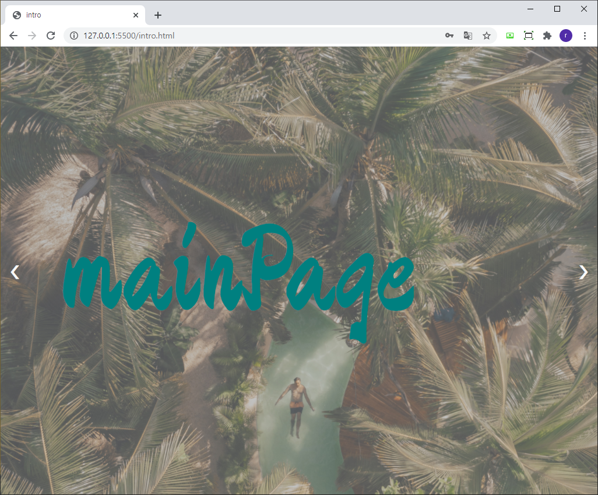

aboutPage
main.html
첫번째로는 메인페이지입니다. 간단하게 환영페이지를 만들어 보았습니다.
전체적으로 페이지의 모든 요소들이
어느정도는 반응형으로 만들어져서 크기를 줄이거나 키워도 구성요소들이 흐트러지지 않게 만들었습니다.
index.html

간단하게 회원가입과 로그인을 할 수있는 인덱스페이지 입니다.
이름과 입장코드 정도만 입력을 받아서 입장코드로 페이지에 접속할수 있게 만들어 보았습니다.
여러가지의 동적인 효과로 페이지를 만들어보았습니다.
intro.html

마지막으로 인트로페이지입니다. 자기소개와 로드맵 페이지의 정보등을 담아두었습니다.
페이지를 마치며, 프로젝트 도중에 3~4번정도 갈아엎었습니다. 디자인 적인 부분에서 많이부족했고
시간이 한정적이다 보니 아쉬움이 많이 남습니다. 개인적으로 여러개의 페이지를 또 만들어 보고싶습니다.